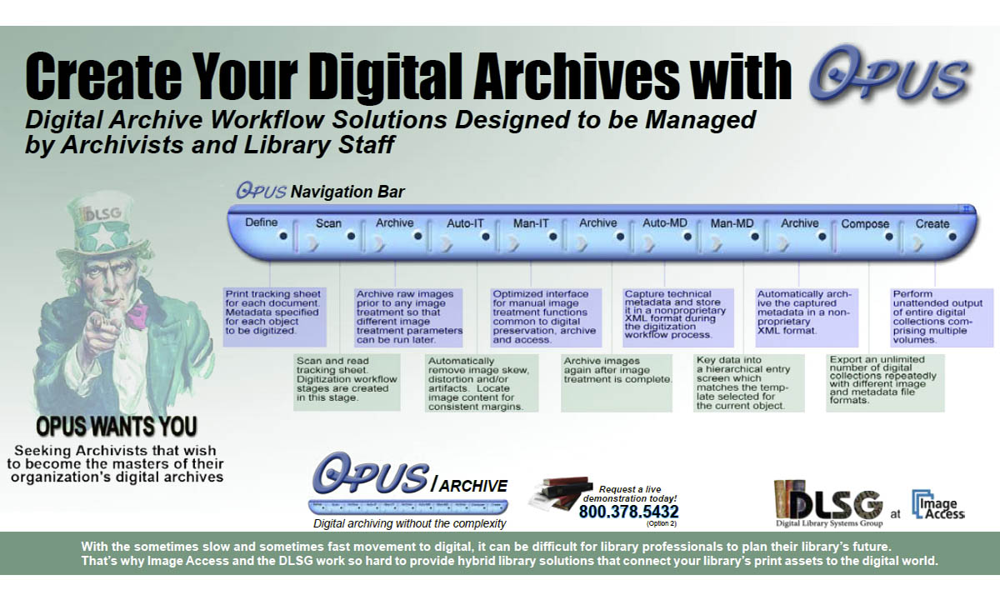

-
Compact Storage
-
Easy Migration
-
"The Maestro"
- 
Step-by-Step
-
Choice Hardware
-
Curriculum

FF-01

Freedom to Digitize Ad-Hoc & On-Demand
Photos, Maps, Documents, Books, ...
FF-02
The Opus digitization process was designed specifically for academic libraries, museums and archives. Use Opus FreeFlow to build digital assets for preservation, archive, digital collections for the Web, and for viewing software. Its image treatment processes such as fan, gutter and book curvature removal, and content location and registration, are dramatically faster and easier to use than photo editing software.
Opus FreeFlow operates a wide array of preservation quality scanners and allows for the import of existing images as well. It then groups images into objects (i.e. books), which are easily managed and processed. Finally, it renders those objects into a variety of derivatives.

With Opus FreeFlow 3-tab interface, users can switch dynamically between scanning, image treatment and outputting derivatives. Multipage objects can be reopened and reprocessed at any time. Pages can be deleted and rescanned and new pages can be scanned and inserted. Unlimited derivatives can be created with variations in image size, resolution, format and file type.
Opus FreeFlow is fully compatible with Opus Digitization Workflow software. While objects are in the middle of the Opus workflow, they can be opened with Opus FreeFlow for additional scanning, image modification and derivative generation.
FF-03
Opus FreeFlow digitization software provides all the necessary functionality to create digital books and other materials from scanned images. Prior to Opus, digitization had to be performed one image at a time using photo editors for image treatment, and content managers for keying metadata. With Opus Freeflow, after scanning and treating images, digital derivative images are output to destinations such as digital content management systems and digital master images to digital archive systems.
Opus Workflow software allows for the use of temporary workers with minimal training while minimizing the chance of errors and ensuring that preservation quality standards are met. Unlike FreeFlow, Opus Workflow applies somewhat rigid management principles. Opus FreeFlow and Opus Digitization Workflow work seamlessly together to allow a trained digitization staff member to perform processing at any time and output independently of the structured workflow.
In addition, Opus FreeFlow works with third-party software. For example, if a user wishes to perform an image treatment function supported by a popular photo editor, the press of a button in Opus FreeFlow can launch the third-party application with the current image ready for editing. Once the edits are completed and saved, exiting the photo editor will return the user to Opus FreeFlow with the image showing the modifications that were made.
| Scanning |
|---|
| Containerizes the images of an object |
| Supports continuous (batch) scanning |
| Supports multiple concurrent objects - suspend and resume scanning of unfinished objects |
| Supports all Scan2Net® scanners |
| Supports many TWAIN scanners |
| Supports insertion, deletion, rescanning and rotation of images |
| Supports undo/redo |
| Image Treatment |
|---|
| Automatically locates content (configurable) |
| Automatically splits pages (configurable) |
| Automatically removes fan and gutter (configurable) |
| Automatically corrects for book curve (configurable) |
| Automatically levels background |
| Manual review, redo and override |
| Automatic process can be individually invoked by user |
| Collection Composition and Creation |
|---|
| Current object output of images in formats that can be imported by D-SPACE, Content DM, Fedora, Re-Discovery and other content managers |
| Derivative attribute specification (e.g. file format, size, resolution, color depth, quality factor) |
| Output of TIFF, JPEG, PDF, PNG, GIF, rich text, ASCII, Unicode, audio & other file formats, (one image per file or the entire volume in one file) |
| Output of full images, reduced images, Web images, thumbnail images |
FF-04
Opus FreeFlow versus Opus Workflow
Features Comparison
Opus FreeFlow is an application that provides the scanning, image treatment and derivative creation capabilities of the full Opus Digitization Workflow system outside of its structured project management environment. Opus FreeFlow doesn't capture or output metadata or perform automatic archiving. Opus FreeFlow is fully compatible with Opus Digitization Workflow software. While objects are in the middle of the Opus Workflow, they can be opened with Opus FreeFlow and additional scanning performed, images modified and derivatives created.


| Define Projects Features and Capabilities | FreeFlow | Workflow |
|---|---|---|
| Creates and manages projects | YES | |
| Creates and manages project templates | YES | |
| Creates and manages objects | YES | |
| Prints object tracking sheets | YES | |
| Maintains a project history database | YES |
| Scanning Capabilities | FreeFlow | Workflow |
|---|---|---|
| Automatically reads tracking sheets | YES | |
| Containerizes the images of an object | YES | YES |
| Supports continuous (batch) scanning | YES | YES |
| Supports multiple concurrent projects and objects - suspend and resume scanning of unfinished projects and objects | YES | YES |
| Supports all Scan2Net® scanners | YES | YES |
| Supports many TWAIN scanners | YES | YES |
| Supports insertion, deletion, rescanning and rotation of images | YES | YES |
| Supports insertion, deletion, rescanning and rotation of images | YES | YES |
| Supports undo/redo | YES | YES |
OPUS FreeFlow Systems
These days students entering college are highly educated regarding all things digital. They absolutely demand digital technology as an integral part of their library experience. KIC self-serve scanning systems make your entire library collection accessible in digital form.
The KIC BookEdge with integrated furniture and touch screen is a wonderful way to offer student digital access to your entire library. It's simple two-button interface makes it very approachable, even by technically timid students. It's low price, sleek design, and small 2x2' foot print make KIC BookEdge a very practical entry-level self-serve scanning solution for any library.
The KIC BookEdge is the perfect choice for student walk-up scanning and copying in areas where space is a premium. It makes entire library collections available in digital form. The KIC BookEdge's clever design allows users to scan pages right up to the bound margin near the spine, without damaging books. The KIC BookEdge produces beautiful, full-color images at no additional cost over black & white images! Even searchable PDF's and text-to-speech (MP3 files) are a snap to create.
The KIC BookEdge was specifically designed to occupy the same space as a typical floor-standing photocopier. Replacing outmoded copiers in academic and research libraries is easy with KIC BookEdge's modern scanning, printing and interactive computerized touch screen technology. With the addition of a color laser printer, the KIC BookEdge provides the functionality of a color copier at a fraction of the cost.
Features
- True-2-Touch™ 2-button user interface
- Integrated Furniture
- Small Footprint - 2 x 2 feet
- Sleek Design
- 23" Touch Screen with Adjustable Tilt
- Low Price
- Book-edge Scan Bed Design
- 17" x 11.8" Scan Bed
Benefits
- Scan/copy up to 12x17 inch pages with a book-edge scanner that captures deep into the book-fold of books and bound serials
- Create full color electronic images and/or paper copies with a single touch
- Review large electronic images at nearly full-size before printing copies
- Electronically collate and print copies
- Create searchable PDF, JPEG, TIFF, PNG and editable text files
- Create audio files from text for MP3 players, including iPods
- Create, collate, and print reports with title pages and style templates
- Go 'green'. Promote minimal use of paper and ink.
- Charge for prints, not for images
Document Formats
Document Specification
Performance Specification
8.5 seconds for full bed at 600 dpi
23.4 seconds for full bed at 600 dpi
Technical Specifications
Crop
Change brightness/contrast
Change resolutions (dpi)
Select: color, grayscale, or B&W
KIC BookEdge Plus - White LED
Dimensions and Weight
59 x 26.5 x 23" (1498.6 x 660.4 x 584.2 mm) with optional stand
114 lbs with optional stand
Electrical Specifications
Options and Functions
PC Requirements
- AMD Athlon™ II Dual Core 1MB
- Windows 7 Professional 64Bit
- 4GB DDR3 RAM
- Maximum Size (HxDxW) 3.4 x 7.8 x 7.8"
- 1 Ethernet port
- CD Reader
- 256 MB minimum / 512 MB optimal graphics card that supports DVI, VGA or HDMI
The cETLus Listing Mark is used for products going into the Canadian and US markets. Products with the cETLus mark have been examined and have passed tests determining compliance with device safety requirements. The standards for IT-equipment are UL 60950 for the US market and CSA.C22.2 No 60950 for the Canadian market.
The CE mark, meaning "European Conformity", formerly EC mark, is a mandatory conformity mark for products placed on the market in the European Economic Area (EEA). With the CE marking on a product the manufacturer ensures that the product conforms with the essential requirements of the applicable EC directives.
The FCC Declaration of Conformity or the FCC mark is a certification mark employed on electronic products manufactured or sold in the United States which certifies that the electromagnetic interference from the device is under limits approved by the Federal Communications Commission. The FCC label is found even on products sold outside the US territory, because they are either products manufactured in the US and had been exported, or they were manufactured in other nations which have US as a prime market (eg: Japan, China). This makes the FCC label recognizable worldwide even to people to whom the name of the agency Federal Communications Commission is not familiar.
DE 15679937
WEEE is the European Community directive 2002/96/EC on waste for electrical and
electronic equipment which, together with the RoHS Directive 2002/95/EC, became European
Law in February 2003, setting collection, recycling and recovery targets for all types
of electrical goods.
This device is in compliance with the requirements of RoHS-guidelines (Restriction of use of certain Hazardous Substances in Electrical and Electronic Equipment.)
........ We love the KIC scanner. It is incredibly fast and simple to use. - Art Institute of Chicago
........ Students refer to KIC as the system that does everything. - Northwestern
........ We are thrilled with the KIC and Opus scanning systems - University of Oregon
........ KIC is the best asset in the library. - Southern Methodist University
........ We love how simple the KIC scanner is. Scanning face up makes it so easy for delicate books. - UCLA
........ KIC is free, it's convenient, and it keeps you out of the copy line. - Amherst College
........ My favorite is the new KIC Bookeye scanner...it has been quite popular.... It's so cool and scans super-fast. - Boston University
........ There are two pieces of equipment that I love in this library; the hole puncher and the KIC scan station, because they both work every time! - Florida Atlantic University
........ We are replacing all our copiers with KIC... We are thrilled with KIC. - Fuller Theological Seminary
........ Everything works so well - BSCAN ILL with the Bookeye has exceeded our expectations! - George Mason University
........ Thank you for providing such a great product and such great service, and for being committed to making sure that your product continues to be the best that it can be! - Maryville University
........ We're VERY pleased with BSCAN ILL, Everything is working great! - Tufts University
........ Our ILL Department is practically based on our Bookeye scanner with Bscan ILL, we love this product. - University of Memphis
........ We're very impressed with the quality of the scans from our Bookeye 4. - University of South Florida
........ We're so pleased with the service from DLSG at Image Access. - University of Vermont
........ I was extremely impressed with the level of service and dedication ... always a pleasure using your products! - University of Washington, Seattle
........ Opus FreeFlow and our Bookeye scanner are so great we bought a second one! - Wayne State University
........ It's all working great! - Western Connecticut State University
........ Everyone is really liking KIC. It is totally saving us a lot of time. KIC is very intuitive and simple to use. - Montana State University Billings
........ We love our Bookeye 3, love it. We love Opus FreeFlow too. - University of Houston
........ We love Opus FreeFlow and all the auto features, like the thumb removal and the book deskew. The quality of the images are absolutely amazing. - The American Museum of Natural History
........ We love BscanILL and how it automatically sends out articles to the users. - University of Denver
........ Wow! KIC is very easy to use and is self explanatory. Everyone at the school has had nothing but praise for it . - Cleveland State University
........ Given the virtual aspect of students' learning today, this method of research material delivery is essential. - University of Washington
........ We love KIC with the Bookeye 4 scanner. The Inter-library Loan department salivates on a regular basis. They have orbital (face-up) scanners of their own, but they come down to use KIC because they like it much better. - Texas A&M
........ It's the most essential piece of equipment in our library. - Baylor University
........ The KIC interface is ten times better than the BookScan Station (CCP, Scannx, Xerox) user interface. - Harvard University
........ We LOVE LOVE LOVE the cropping features and the upload speed on our KIC Bookeye 4! - The Brooklyn Museum of Art
........ We love our KICs! - Howard Hughes Medical Center
........ I can see so many uses for this KIC book scanning system, and it will definitely save wear and tear on library materials. - Northwestern State University
........ KIC is what people want. We have noticed a significant decrease in photocopy use and an increase in scanner use. The KIC scanners are more efficient and they save paper. Both students and faculty like how easy they are to use and that they save time. - University of Missouri, Kansas City
........ I'm very pleased with the Bookeye and Opus FreeFlow, more importantly the service supplied by your team. I want to commend all of you! I may be used as a reference! - 11th Circuit Court of Appeals
........ We have been very pleased with this scanner and software (BSCAN ILL with Bookeye scanner), both with the quality of the scans and with the workflow efficiencies it offers. Support for the product by the vendor has also been very satisfactory... (in addition) we are filling a larger number of journal article requests from full-text online databases. - University of St. Thomas
........ Opus searchable pdf's are more reliable, take less time and are much better than the Acrobat text pdf's. - Southern Illinois University, Edwardsville
........ As with all really cool, useful technology it was very popular so we are thrilled to announce that a second KIC has been set up on the first floor of our library. - Plattsburgh State University of New York
........ Students line up to use KIC instead of photocopiers. Our users are loving that they do not have to pay for scanning with KIC. - University of Texas, Arlington
........ I am always impressed with the service that DSLG / Image Access provides. - Columbia Law School
........ We love the BookEdge so much more than the Scannx product. KICs interface is so easy to use, it is just two steps. - Millersville University of Pennsylvania
........ I'm very impressed with Bookeye 4 scanner and BSCAN ILL software. We increased our productivity... what took me 4 hours in the past, now it takes me just 1 hour. We are very happy. - Midwestern State University
........ I love the excellent and prompt service you guys provide, I know a lot of tech companies that provide terrible service. KIC is very easy and simple to use. I love that it splits the pages for you. - Miami University of Ohio
........ Wow, you guys (service department) are awesome. These are the best scanners ever. - Colorado State University
........ We've been scanning our older public records using a Bookeye since 2006. Digitizing our records and making them available on line is one of the best decisions we made. - Hendricks County
........ KIC is very popular here, people use it all the time. I love how it performs so quickly. - Bentley University
........ We and our patrons are thrilled with the KIC BookEdge! - St. Mary's College of Maryland
........ Our new WideTEK 25 scanner so beautiful! The quality of images is so impressive. We are extremely happy to have this scanner in our department. - Northeastern University
........ KIC made my life so much easier during a stressful exam week! - Duke University
........ Our KIC BookEdge is our new best friend! It has enhanced our ILL process and solved the problem of copying tightly bound journals with almost no gutter left. Our students love using it too! - Baylor University, School of Nursing
........ The KIC BookEdge+ is a very intuitive system. I got the hang of it quickly... I don't know how, but you folks built a machine that knew what I was thinking, what I was needing. ... Just feedback to show my appreciation for KIC and your super service. Like I said, you guys made me feel important! - Texas Tech University
........ Our KIC BookEdge system looks so much nicer than the Scannx (Xerox, CCP), the cabinet looks so sleek. - Villanova
........ If I had the money I'd buy three more of these! (Bookeye 3 R2) We run it day in and day out with great results! - Boston University
........ We Really like KIC, it is very easy and intuitive. - University of San Francisco
........ The BSCAN ILL software and BookEdge scanner has increased our productivity and efficiency significantly. My student workers love it. - Montana State University, Billings
........ Students are absolutely stunned by KIC's abilities. - North Georgia College & State University
........ Our students LOVE the KIC BookEdge systems, so we think they were a great purchase. - Emporia State University
........ I can tell you that of the public scanners we have for patron use, [which includes the Zeta] the KIC BookEye systems are by far the most popular. - Texas A&M University
........ Students love KIC and use it ALL the time. - Paul Smith's College
........ Students LOVE KIC - it's totally intuitive - works like a charm! - St. Mary's College
........ KIC is seriously impacting my printer/copier revenue stream! Students love it! - University of New Hampshire
........ Who needs a photocopier now that we have a KIC book scanning system? - Diablo Valley College
........ We always have long lines to use our 6 KIC scanners! - University of Houston
........ Our KIC was so popular - always a line of students waiting to use it - we had to purchase a second one! - University of Alaska
........ KIC is AWESOME!" - University of Oregon .......... We LOVE our KIC book scan stations! - University of Iowa
........ The KIC interface seems to be better designed based on staff and student comments. - Texas A&M
........ Love the KIC scanner. NO need for a photocopier! - University of Pennsylvania
........ We love you KIC scanners AND so do our STUDENTS! Thanks! - Missouri, Columbia
........ We love our KIC system, it is so much cooler than the Ivina. KIC looks like it is from the 21st century, the other one looks like it is from a hundred years ago. Also we love the fact that you can export as an MP3 in KIC. - Millersville University of Pennsylvania
........ KIC makes my research so much more accessible! Thank ya! - Duke University
........ Students love the KIC, they are always using it. You would think that with all the other technology our library has, that students would use them. No, instead they say 'You guys have a KIC!! That is so Cool!' - Miami University of Ohio
........ Without a doubt, the KIC BookEdge is a great machine. But the service we received...is what made the sale. - St. Mary's College of Maryland
........ People love the KIC Bookeye 4 scanner, they love using the cradles. - Columbia Law School
........ Our administrators have noted that photocopier activity has gone down in the past years, and they are attributing that to KIC ... the quality of the scans are excellent ... The Bookeyes are amazing scanners. - University of Texas
........ The opportunities created for NSU students to enhance their studies and course materials will be unmatched by most institutions of comparable size---and by many that are much larger! - Northwestern State University
........ Each time I've had the opportunity to introduce a new student to this service, the response has generally been surprise and delight. - University of Washington